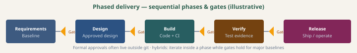

Phased delivery
Sequential phases, gates, and baselines — common in regulated work; hybrid with iterative delivery inside a phase.
Process overview
- Work moves through phases (e.g. requirements → design → build → verify → release) with gates: approvals and artifacts before the next phase.
- Baselines freeze scope or design for audit; change control updates them deliberately — see handbook
change.html. - Hybrids: run iterative sprints inside a build phase while gate evidence still satisfies regulators.

Authoritative sources
Each entry: what the link is and why this blueprint points to it—you can skip opening it if you already know the source.
- ISO/IEC/IEEE 12207International standard for software life-cycle processes—formal anchor for phased/regulated delivery (catalogue; full text is paid/licensed).
- Wikipedia — Waterfall modelInformal history and diagram of sequential phases—context, not a normative standard.
- Wikipedia — Software development processWaterfall as one lifecycle among many—helps compare with iterative approaches.
- Wikipedia — Agile software developmentContrast between iterative Agile and plan-driven lifecycles—useful for hybrid (gates + iterations).
In this blueprint
Gates and approvals live in compliance / ALM as needed; git shows engineering touch. Traceability matrices in docs/requirements/ align with phased evidence.
Deep dive (prescriptive)
Package index: phased/README.md.
Full guide (canonical)
Executive summary: phased-delivery.md. Prescriptive package: phased/README.md.